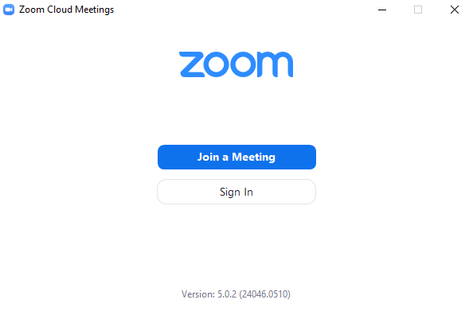
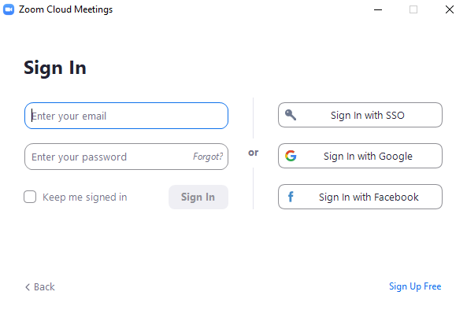
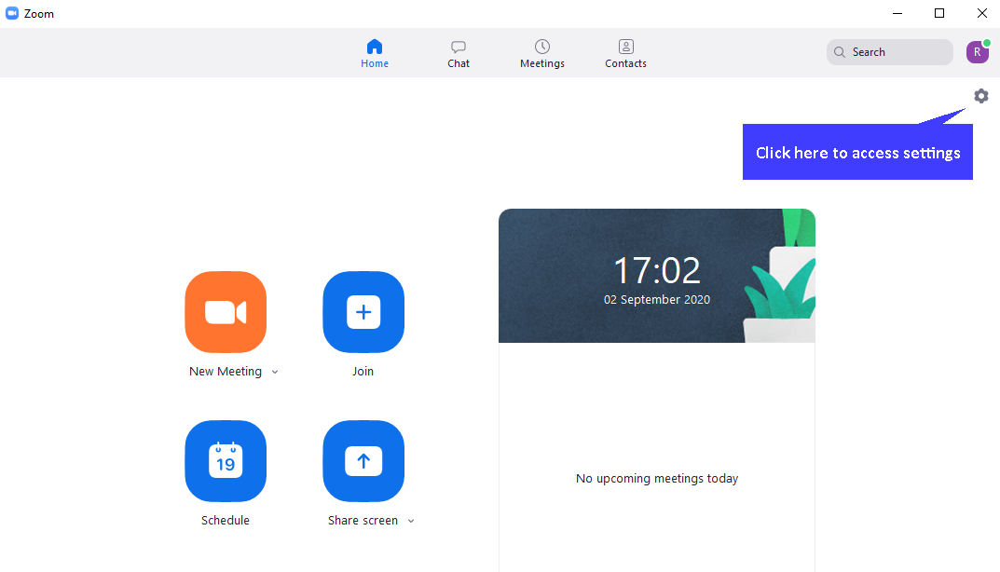
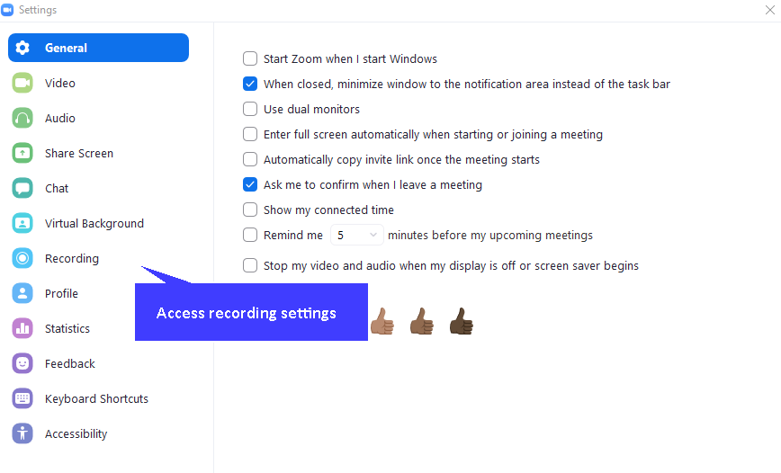
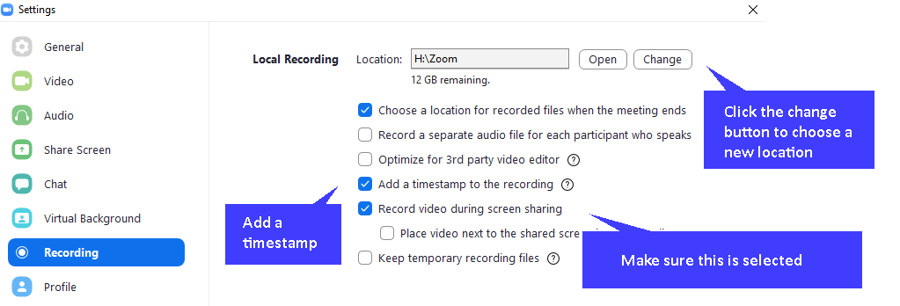

Set up Zoom to use local recordings - part 2
Set up Zoom to use local recordings - part 2 
Part 2 - Adjust local Zoom settings
Bring up the Zoom application on your PC/tablet.

Sign in with the same credentials.

Click the settings icon at the top right of the window.

Click the Recording option in the left hand menu.

Change the file location for saving files locally if required. Make sure 'Record video during screen sharing' is selected. You can also choose to add a time stamp to the video. Close by using the X in the top right of the pop-up window.
